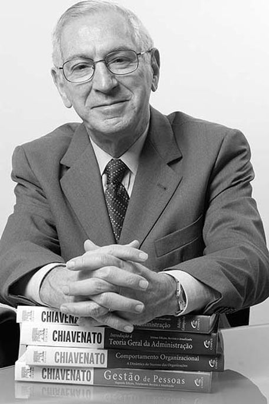

👨💻 Acerca de mí
Soy un Licenciado en Administración con una profunda pasión por el management y el análisis financiero. Mi objetivo es seguir aprendiendo y aplicando mis conocimientos para optimizar y automatizar procesos organizacionales con el uso de la tecnología.
🚀 Actualmente, me estoy especializando en Python. Una prueba de ello es este portafolio web, que te muestra mis habilidades en programación y cómo las aplico en el ámbito de las ciencias económicas para generar reportes que faciliten la toma de decisiones.
👥 Además, participo en un grupo de investigación multidisciplinario que analiza crímenes de cuello blanco. Mi rol es aportar una opinión técnica económica en casos complejos de corrupción y fraudes financieros, aplicando los conocimientos de mi profesión y mis habilidades en peritajes económicos.
📝 Citas de Autores
— Sun Tzu"La mejor victoria es vencer sin combatir."
— Michael Porter"La esencia de la estrategia competitiva es ser diferente. Se trata de elegir deliberadamente una serie de actividades para ofrecer un valor único."
— Peter Senge
"Los modelos mentales son supuestos profundamente arraigados, generalizaciones, o incluso imágenes o 'retratos' que influyen en cómo entendemos el mundo y cómo actuamos."
— Henry Mintzberg"No hay una única y mejor forma de diseñar una organización; la estructura óptima depende de la situación."
— Idalberto Chiavenato"Una empresa es un sistema social complejo, donde las partes se interrelacionan para el logro de un objetivo."
— Ludwig von Bertalanffy
"El concepto básico del sistema es la noción de un conjunto de elementos interactuantes e interdependientes que funcionan como un todo unificado."
💡 Habilidades Blandas
- Predisposición al aprendizaje
- Proactividad
- Gestión del tiempo
- Polivalencia
🛠️ Herramientas Técnicas

📂 Proyectos
Proyecto 1: Sistema de Inventario en Python
Descripción: Video que demuestra la implementación de un sistema de inventario en tiempo real con Python para procesar directrices administrativas y generar reportes para la toma de decisiones.
Proyecto 2: Investigación Interdisciplinaria sobre Delitos de Cuello Blanco
Descripción: Formo parte de un grupo de investigación conformado por abogados, antropólogos, jueces y profesionales de las ciencias económicas, donde analizamos fenómenos de criminalidad compleja vinculados a delitos de cuello blanco. Mi labor específica es aportar una mirada económica y administrativa, evaluando el impacto financiero, la racionalidad de las decisiones de los actores involucrados y las estrategias utilizadas en contextos de corrupción, lavado de activos o fraudes empresariales.
Material disponible:
Valor de este proyecto: Este trabajo me permitió integrar mi perfil de Licenciado en Administración en un equipo interdisciplinario, aplicando mis conocimientos económicos al análisis de problemáticas reales de criminalidad organizada. El marco teórico aquí presentado funciona como base para futuros estudios de casos concretos en los que profundizaremos.